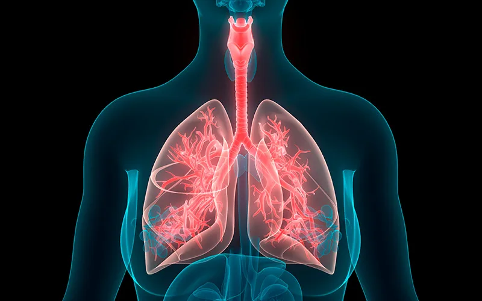

Controle de Poeira Respirável: Prevenção da Silicose Industrial
Como a nebulização industrial atua na fonte para reduzir a exposição à sílica cristalina respirável.

A geração de poeira respirável é um dos principais riscos ocupacionais em atividades industriais como mineração, beneficiamento de rochas, construção civil, indústrias de cimento, terraplenagem e demolições. Entre os agentes mais críticos está a sílica cristalina respirável, cuja exposição prolongada pode causar silicose, uma doença pulmonar grave, irreversível e potencialmente fatal.
Diante desse cenário, o controle de poeira no ambiente de trabalho deixa de ser apenas uma boa prática e passa a ser uma exigência técnica, legal e ética. É nesse contexto que os sistemas de supressão de poeira por névoa se consolidam como uma das medidas de engenharia mais eficazes para a prevenção da silicose e de outros agravos respiratórios.
O que é a poeira respirável e por que ela é um risco crítico
A poeira respirável é composta por partículas de pequeno diâmetro aerodinâmico, capazes de penetrar profundamente no sistema respiratório humano, alcançando os alvéolos pulmonares. Diferentemente das partículas mais grossas, essas frações finas não são eficientemente retidas pelos mecanismos naturais de defesa do organismo.
A sílica cristalina, presente em materiais como areia, quartzo, granito, concreto e minério, é um dos componentes mais perigosos dessas poeiras. Classificada como agente cancerígeno pela IARC (órgão ligado à Organização Mundial da Saúde), está diretamente associada ao desenvolvimento da silicose.
Inalável, torácica e respirável: entendendo a classificação por tamanho de partícula
A higiene ocupacional classifica o particulado em suspensão em três frações, definidas pelo tamanho e pela capacidade de penetração no sistema respiratório. A fração inalável reúne todas as partículas que podem ser inaladas pelo nariz ou pela boca, incluindo as maiores, retidas nas vias aéreas superiores. A fração torácica é composta por partículas um pouco menores, capazes de ultrapassar a laringe e atingir as vias aéreas e a região superior dos pulmões. Já a fração respirável reúne as partículas mais finas, pequenas o suficiente para escapar dos mecanismos naturais de filtragem do organismo e alcançar diretamente os alvéolos pulmonares, onde ocorrem as trocas gasosas.
É justamente essa fração, e em especial a sílica cristalina respirável, que representa o maior risco para doenças pulmonares ocupacionais como a silicose, porque se deposita em uma região do pulmão sem capacidade de expulsar partículas sólidas pelos mecanismos de defesa do próprio corpo, como o muco e os cílios das vias respiratórias. Entender essa diferença é fundamental para o dimensionamento de qualquer estratégia de controle: reduzir a poeira visível no ambiente não significa, necessariamente, reduzir a fração respirável que efetivamente compromete a saúde do trabalhador. Para uma visão mais ampla sobre como diferentes tipos de particulado mineral se comportam, vale consultar também o conteúdo sobre os principais tipos de poeira mineral e seus riscos.
Silicose: o que é, como se desenvolve e por que é irreversível
A silicose é uma doença pulmonar ocupacional real e bem documentada na medicina do trabalho, causada pela inalação crônica de poeira contendo sílica cristalina. Quando as partículas respiráveis de sílica se depositam nos alvéolos, o organismo reage tentando isolar esse material estranho, formando pequenas cicatrizes (fibrose) no tecido pulmonar. Com a exposição continuada ao longo dos anos, essas lesões se acumulam e comprometem progressivamente a capacidade respiratória.
A silicose é progressiva (tende a evoluir mesmo depois de cessada a exposição, em muitos casos), incurável (não existe tratamento capaz de reverter a fibrose pulmonar já instalada) e prevenível (o controle da exposição ocupacional à poeira respirável é a forma mais eficaz de evitar a doença). Em estágios avançados, pode evoluir para comprometimento respiratório severo, maior suscetibilidade a infecções como a tuberculose e incapacidade laboral permanente. Além dos impactos à saúde, a exposição à sílica cristalina gera passivos trabalhistas, previdenciários e reputacionais, além de riscos de autuações e embargos, por isso a prevenção deve priorizar medidas de engenharia, reduzindo a concentração do contaminante antes de recorrer exclusivamente a Equipamentos de Proteção Individual (EPIs). Para entender melhor os efeitos da exposição prolongada a particulados no organismo, veja também os principais riscos da poeira para o organismo.
A hierarquia de controles e o papel dos controles de engenharia
A segurança do trabalho organiza as medidas de proteção em uma hierarquia, ordenada da mais para a menos eficaz: eliminação do risco, substituição do processo ou material por uma alternativa menos perigosa, controles de engenharia, controles administrativos e, por último, EPI. Eliminar totalmente a geração de poeira costuma ser inviável em processos como britagem ou movimentação de granéis minerais, e substituir o material também tem limitações práticas, por isso os controles de engenharia, que atuam fisicamente no ambiente ou na fonte de emissão sem depender de uma ação do trabalhador a cada instante, ocupam posição estratégica.
Os canhões de névoa para supressão de poeira se enquadram exatamente nessa categoria: reduzem a concentração de particulado em suspensão antes que o trabalhador precise contar exclusivamente com a proteção respiratória individual. Isso não elimina a necessidade do EPI, a NR-06 continua aplicável, mas reduz a dependência de uma única barreira sujeita a uso incorreto, desconforto e falhas de vedação, beneficiando inclusive trabalhadores que circulam pela área sem EPI específico para a atividade.
Como funciona o controle por nuvem de névoa
Os sistemas de supressão de poeira por névoa atuam por meio da pulverização de microgotículas de água, formando uma névoa controlada que interage fisicamente com as partículas de poeira em suspensão. O princípio de funcionamento baseia-se na geração de gotículas microscópicas, na alta área de contato entre gotículas e partículas sólidas, na aglomeração das partículas finas e no aumento do peso das partículas, promovendo sua decantação antes da inalação.
Quando corretamente dimensionada, posicionada e controlada, a névoa reduz significativamente a concentração de poeira respirável, incluindo frações finas associadas à sílica cristalina, sem provocar encharcamento do ambiente. Esse princípio é o mesmo aplicado em operações de grande escala, como detalhado no conteúdo sobre poeira na mineração e as normas de controle aplicáveis ao setor.
Setores de maior exposição à sílica cristalina respirável
Embora o risco esteja presente em diversos segmentos industriais, alguns setores concentram historicamente maior atenção das equipes de saúde e segurança do trabalho por envolverem processos com alta geração de particulado fino de sílica: mineração e beneficiamento mineral, britagem de rochas, jateamento de areia, indústria cerâmica e construção civil, especialmente em corte e perfuração de pedra, concreto e argamassa. Nesses ambientes, a combinação de geração intensa de poeira com frações respiráveis de sílica cristalina torna o controle de engenharia uma prioridade dentro do programa de gestão de riscos, ao lado das medidas administrativas e do uso correto de EPI.
Vantagens técnicas da nebulização industrial
Alta eficiência no abatimento de partículas finas e atuação na fonte
A geração de microgotículas com diâmetro controlado permite a captura eficiente de partículas suspensas no ar, reduzindo sua dispersão e o risco de inalação pelos trabalhadores. Os sistemas podem ser direcionados para pontos críticos, como frentes de lavra e corte, britagem e peneiramento, correias transportadoras, áreas de carga e descarga e processos de demolição, reduzindo a propagação da poeira para áreas adjacentes.
Baixo consumo de água
Em comparação com métodos convencionais de umectação, a nebulização industrial apresenta baixo consumo de água, evitando encharcamento do solo, danos a equipamentos e interferências no processo produtivo.
Conformidade normativa
A adoção de tecnologias de controle coletivo de poeira está alinhada a diversas Normas Regulamentadoras, entre elas a NR-01 (Disposições Gerais e GRO), a NR-06 (EPI), a NR-07 (PCMSO), a NR-09 (Avaliação e Controle das Exposições), a NR-15 (Atividades Insalubres) e a NR-22 (Mineração), que prevê a obrigatoriedade do controle de poeiras minerais e incentiva o uso de tecnologias de supressão. O Anexo 12 da NR-15 trata especificamente de limites de tolerância para poeiras minerais, parâmetro que a legislação brasileira utiliza para caracterizar a insalubridade da exposição ocupacional a esse agente. Os canhões de névoa industriais da Suppress também estão alinhados com a lógica de conformidade da NR-12 quanto à segurança de máquinas e equipamentos.
Monitoramento e acompanhamento médico como parte do programa de prevenção
Nenhuma medida de engenharia substitui o acompanhamento sistemático da exposição ocupacional. Um programa de prevenção da silicose consistente combina o controle físico da poeira no ambiente com o monitoramento periódico da qualidade do ar, medindo a concentração de poeira respirável e de sílica cristalina nos postos de trabalho, e com o acompanhamento da saúde dos trabalhadores, estruturado no Brasil pelo Programa de Controle Médico de Saúde Ocupacional (PCMSO), previsto na NR-07. O PCMSO define exames admissionais, periódicos e demissionais voltados à identificação precoce de alterações respiratórias associadas à exposição a poeiras minerais, fechando um ciclo em que o controle de engenharia reduz a exposição, o monitoramento verifica sua eficácia e o acompanhamento médico identifica precocemente qualquer sinal de comprometimento respiratório.
Tecnologia Suppress no controle de poeira respirável
Os equipamentos da Suppress Tecnologia e Sustentabilidade são projetados especificamente para ambientes industriais severos, atendendo a critérios rigorosos de engenharia, segurança e confiabilidade operacional. Soluções como SP-150, SP-65, SP-55 e SP-35 oferecem controle ajustável conforme o processo produtivo, operação contínua em ambientes agressivos e integração com programas de gestão de riscos. Conheça a linha completa de equipamentos no catálogo de canhões de névoa Suppress para identificar a solução mais adequada ao seu processo produtivo.
Investir em tecnologia de controle de poeira não é apenas cumprir a lei, é preservar vidas, proteger a operação e garantir a continuidade do negócio.
Conclusão
O controle de poeira respirável, especialmente da sílica cristalina, é um desafio crítico para a saúde ocupacional e para a sustentabilidade das operações industriais. Os sistemas de supressão por névoa, quando aplicados com critério técnico e equipamentos adequados, representam uma solução eficaz, moderna e alinhada às Normas Regulamentadoras brasileiras, atuando como controle de engenharia que complementa, e não substitui, o uso correto de EPI e o acompanhamento médico ocupacional previsto no PCMSO.
Perguntas Frequentes
O que é silicose e como ela se desenvolve?
Silicose é uma doença pulmonar ocupacional causada pela inalação crônica de poeira contendo sílica cristalina respirável. As partículas finas se depositam nos alvéolos pulmonares e provocam fibrose (cicatrização) progressiva do tecido pulmonar. É uma doença incurável, mas prevenível por meio do controle da exposição ocupacional à poeira.
Qual o papel dos canhões de névoa na prevenção da silicose?
Os canhões de névoa atuam como controle de engenharia, reduzindo a concentração de poeira respirável e de sílica cristalina em suspensão no ambiente antes que o trabalhador a inale. Eles complementam o uso de EPI, diminuindo a quantidade de contaminante disponível no ar e protegendo também trabalhadores que circulam pela área.
Qual a diferença entre controle de engenharia e EPI na prevenção da silicose?
O controle de engenharia atua fisicamente no ambiente ou na fonte de emissão, reduzindo o contaminante de forma coletiva e contínua, sem depender de uma ação individual do trabalhador. Já o EPI depende do uso correto e constante por cada trabalhador para ser eficaz. A hierarquia de controles recomenda priorizar medidas de engenharia, usando o EPI como camada complementar de proteção.
Quer avaliar a aplicação ideal para a sua operação?
Fale com nosso time técnico sobre soluções para controle de poeira respirável.
Solicitar Proposta